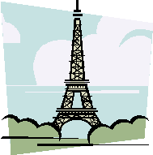

Europe had been on my trip list for 3 decades. Time and finance prevented me from fulfilling my dread. Lately I learnt there was no perfect conditions to do anything. If I ever wanted to do a thing, I'd had to push a little. And also I'd realized my physical and mental power to do this sort of thing won't last forever. My old age might be creeping in from behind.
One route on Jerry Simpson's Cycling France had attracted me for a few years. It was from Versailles, France to Pamplona, Spain. Crossing the Pyrenees was one thing, another it went close to the chateau, where Michel Montaigne wrote his essays in late 16 th century. what he wrote in the book had affected me both positively and negatively starting from my high school days. To visit his place had a symbolic meaning to me.
A reasonably priced air ticket was to Amsterdam. So I decided to cycle from there intercepting Jerry's route west of Paris.
Once in Amsterdam I found Dutch, Belgian, French bike route called Noordzeeroute, which started from Dan ****, Netherland and ended (at this moment) at Boulogne sur mer, France.
Armed with these two routes I should be able to navigated between them, I thought. I arrived at Amsterdam on May 6 of this year(1997). On the former, though I'd known the prevailing wind was against me, I, time to time, hit a hurricane like wind mixed with rain. I had to bite into the wind with my lowest available gear combination on the flat terrain of Holland and Belgium down to Northern France. The route was excellent with plentiful signs and low automobile traffic. But occasionally mopets scared me by suddenly passing me with annoying two cycle exhaust stink. By this route I crossed Holland along the coast and Belgium a little inland, and then reached Boulongne on the Channel. I thought it was fancy to visit England on day trip(This was after my failed attempt to visit an English airfield by a rented airplane). So I did and was glad. Folkestone and Dover areas were lovely. And also my langage problem was relieved on that day. Obviously everybody spoke English there.
As planned, I got on Jerry route. But around Poitiere, a new problem arose. I might not have time to visit Spain. Telephone consultation I got from ex-VBC member, Pierre in Bordeaux encouraged me. The next day the wind finally died. I rode 180 km which secured my original plan of Spain. I crossed the Pyrenees at Roncesvalles Pass in Basque region.
The city of Pamplona was the end of cycling portion of my tri0 after 21 days. There my bike and me became passengers of trains. The Spanish train rides were charmingly pretty. The French TGV was fast and efficient.
By was of Bordeaux and Paris I came back to Amsterdam, where I met my bike which I sent from French border town of Hendye 5 days before.
What did impress me much in this trip? the old stone culture of cities
and villages did. But the most impressive thing I encountered with was
the people I met. Every single person I met, helped me to complete this
trip, regardless the language problem sometime I experienced.
(Updated:
Saturday May 18, 2002)